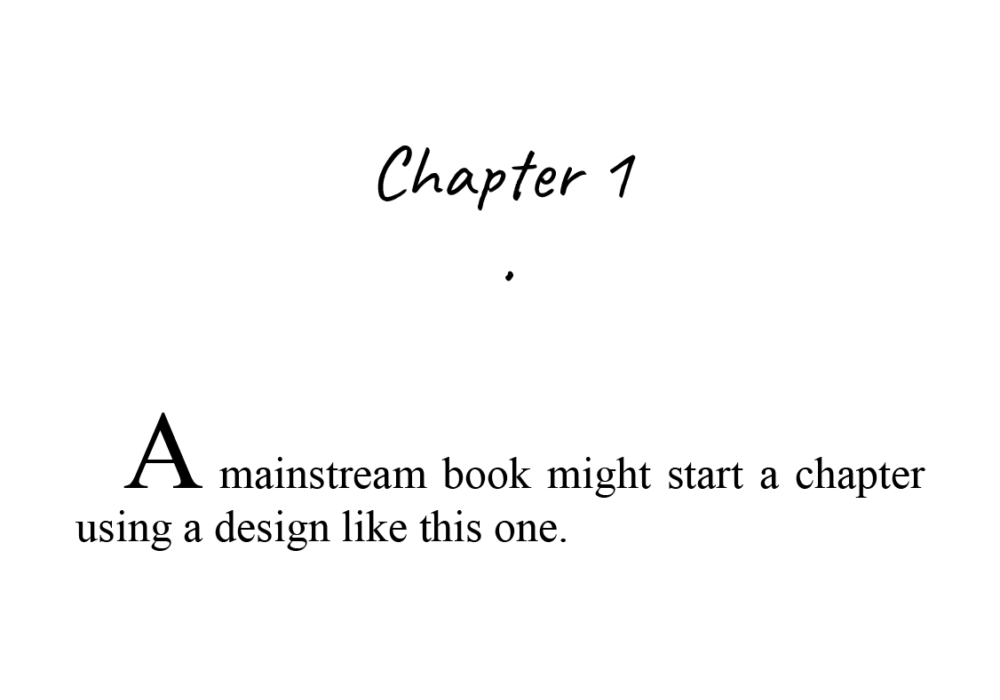
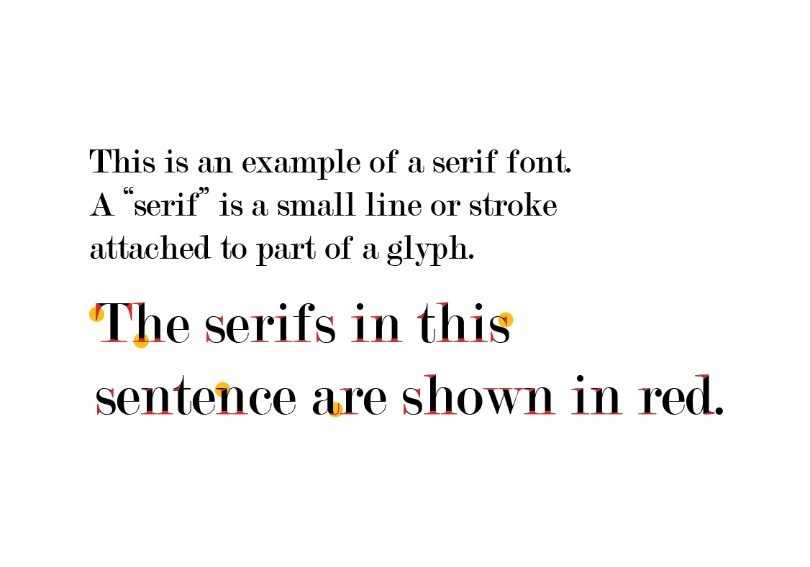
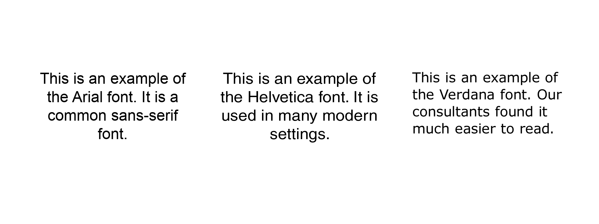
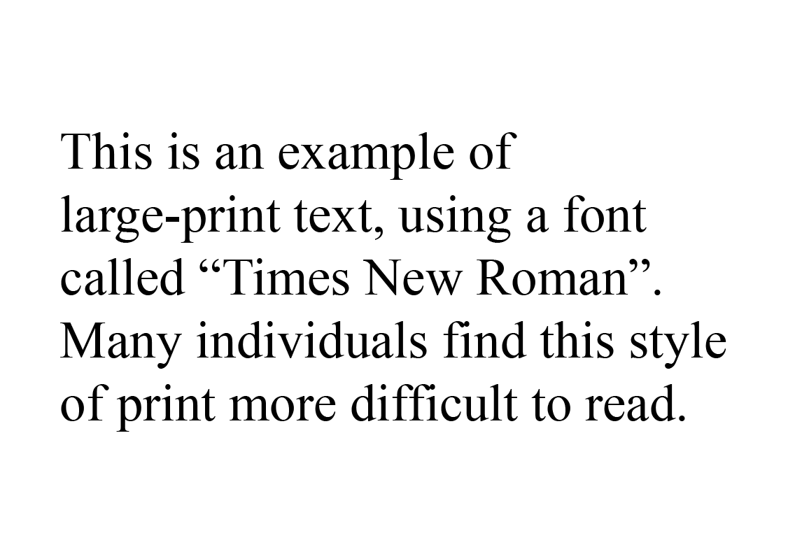

Sweet Bloods was created to accommodate the full scope of abilities, thanks to the advice of accessibility consultants, test-readers, and modern guidelines for designing clear-print books.
Across Turtle Island, many Indigenous people live with diabetes. Diabetes often causes medical complications, including damage to nerves, eyes, feet, skin and hearing.
Since Sweet Bloods is a book of stories about living with diabetes, it made sense to design the book for all people living with physical impairments, including the ones diabetes can cause.
Decorative Elements
We used as few decorative elements as possible: the test-readers on our team approved a right-justification for chapter titles, and the first word of every chapter in uppercase. The chapter titles are not much bigger than the rest of the text, since too big of a contrast between different fonts was also problematic.

Mainstream books often include larger first letters, graphics or icons, or even large numbers, at the beginning of a chapter, and the chapter title is sometimes in a different font. These elements can make the rest of the text harder to read.
Fonts
Most traditional designers believe that fonts with serif are easier to read. The typeface on a standard page is often serif. Sans-serif is used for titles, captions, even footnotes.

However, inside Sweet Bloods and on most of the cover, we use the Verdana typeface, which was chosen for its legibility. The Canadian National Institute for the Blind (CNIB) suggests Arial and Helvetica, but our test-readers overwhelmingly preferred Verdana. We also used generous spacing between lines, and generous margins, gutters and centrefolds compared to mainstream books.

Formatting
Throughout the book, indents are one consistent, deep size. Usually, mainstream books will have hanging indents or shallow indents, which are not very visually distinctive, so the text is harder to read for people with visual impairments.
Widows and orphans (words left over at the bottom of a paragraph or the top of a page) weren't an issue for our test-readers. In fact, we found it was more important to make sure there is enough space to make sure everything is legible. Having clear space between words was much more important than ensuring there were fewer widows and orphans.
Book Design
Our design is square-shaped, and the cover has a velvety finish, which makes it easy to handle.
Conclusions
Reading the printed page of a traditionally-designed book can be very difficult. Serifs, kerning, justification, and other aspects of traditional book design all contribute to visual exhaustion. Depending on the book and its intended audience, book designers often use these tools generously.
For instance, many of our test-readers found it more difficult to read large-print (16- or 18-pt) Times New Roman than 10-pt Verdana.

Often, changes are made on such a tiny scale that most readers don't even notice.
Many of our test readers experience reading exhaustion with mainstream books. Thanks to the feedback of all the members on our team, the second edition of Sweet Bloods was designed using research from real-world settings.
We started out using the same toolkit as mainstream book designs, creating a basic book layout using CNIB guidelines. Then we gathered feedback, re-designed, and re-tested several times to arrive at a final, accessible version approved by our team of test readers.
This design might look strange or amateurish, but most readers – including those whose needs aren't met by mainstream design principles – are able to read much further without tiring.
If you have your own feedback to share on the accessible design of Sweet Bloods, please get in touch.
Glossary
Font
A font is a collection of characters (also known as letters or glyphs) which share the same design. Using different fonts changes the look and feel of text. Some fonts are easier to read. Other fonts can add unique style to the text.
Glyph
An individual character (e.g. uppercase letters, lowercase letters, numbers, symbols, punctuation marks, etc.) When a whole series of glyphs is designed in the same style, the collection of those glyphs is called a font.
Indent
At the beginning of a block of text, the first line can sometimes start slightly further away from the margin than the rest of the paragraph. An indent is the term used to describe the distance of that first line of text.
Justification
A common type of text alignment. The spaces between words and glyphs are stretched or shrunk, in order to align both the left and the right sides of a paragraph.
Kerning
Kerning is the word used to describe the width between individual glyphs in a word. To make a font look a certain way as a whole, designers will sometimes change the width between individual letters.
Serif and Sans-serif
A "serif" is a small decorative line or stroke attached to part of a glyph. When a font is described as "serif", it has these small lines attached to its glyphs. A "sans-serif" font does not have these decorative lines, and can often look slightly rounded.
Widows and orphans
Words left over at the top of a page or the bottom of a paragraph.